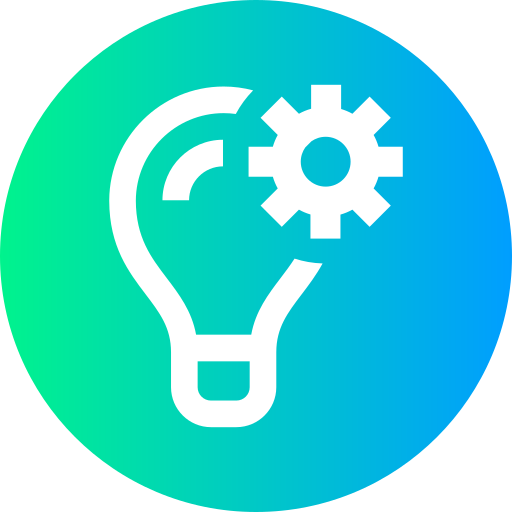

Prajwal HP
Designing with clarity. Learning with intent.
AI/ML enthusiast · UI/UX learner · Data-minded
About Me
I’m, a B.Tech student in Artificial Intelligence and Machine Learning at PESITM. With a strong foundation in data and logic, I’ve developed a deep interest in design — especially where user experience meets intelligent systems.
My focus lies in creating interfaces that are not just functional, but intuitive and meaningful. I believe design plays a critical role in making complex technologies more human-centered, transparent, and trustworthy.
By combining my technical background with a growing passion for UI/UX, I aim to design digital products that are simple, structured, and aligned with real-world needs. I'm still learning — but every project helps me move one step closer to building solutions that think smart and feel right..
Where Logic Meets Design
- Problem-solving from a systems perspective
- Data storytelling with Power BI and Tableau
- Human-first UI thinking grounded in real-world context
- Calm, structured interfaces that make sense and feel natural
Tools: Figma · Notion · Power BI · Tableau · Excel · Python · TensorFlow · PyTorch
Projects

Cyber Threat Detection in 6G Networks – Built an AI-powered system to detect online threats instantly in future 6G networks.- Topic Modeling for Research – Created a tool that helps organize and group research papers by topic using NLP.
- Car Price Prediction – Designed a web app that predicts used car prices based on key features.
- Car Rental System – Developed a platform to manage vehicle bookings, tracking, and user activity.
- Plagiarism Detection – Built a tool to detect content similarity in educational documents using text analysis.
- ePhotoBooth – Launched a web platform to create and download Polaroid-style photos.
- Rupeazy Wallet UI Redesign – Redesigned the user interface of a digital wallet for a smoother, minimal user experience.
Upcoming Works
- Documenting a full UI/UX case study
- Redesigning some well-known apps
- Experimenting with AI-generated UIs based on prompts
- Writing a blog on design thinking + ML modules
- Building an AI agent
Certifications & Participation
- Attention in Transformers – DeepLearning.AI (2024)
- Deep Learning with TensorFlow – IBM (2024)
- DBMS Hackathon – PESITM
- Cybersecurity Bootcamp – NITK
Leadership & Volunteering
- Forum Coordinator – AIML Department, PESITM
- IEEE Student Member